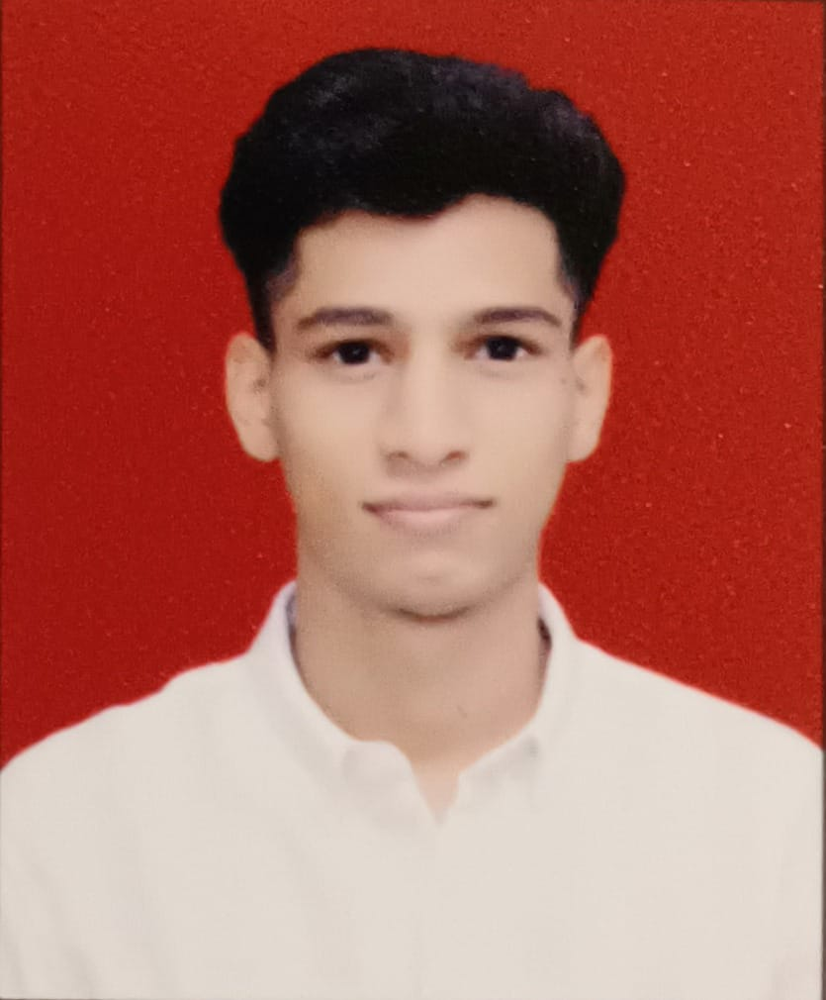

Devansh Bait

Summary
Highly skilled and detail-oriented Mechanical Engineer with expertise in designing, developing, and testing mechanical systems and components. Strong knowledge of CAD software, materials science, and manufacturing processes. Passionate about solving complex engineering problems and delivering innovative solutions.
Education
- Bachelor in Mechanical Engineering - Fr. Conceiao Rodrigues College Of Engineering,Bandra, 2024-2026
- Diploma in mechanical engineering -Vidyavardhini's Bhausaheb V artak Polytechnic, 2024-2022
- ITI i mecahanic motor vehical - St.Francis Industrial Training Institute,2022-2020
Work Experience
-
Mechanical Engineer - Tech Manufacturing Ltd, 2022-Present
- Designed mechanical components using CAD software like SolidWorks and AutoCAD
- Collaborated with the production team to ensure designs were manufacturable and cost-effective
- Performed stress and load analysis to ensure safety and durability of components
-
Intern - Engineering Solutions Inc, 2021-2022
- Assisted senior engineers with product design and prototype testing
- Conducted material testing and analysis for quality control
- Helped improve efficiency of manufacturing processes by proposing design optimizations
Skills
- Nx-Cad
- Ms-cit
- Leadership
- Team Building
Awards and Certifications
- Certified SolidWorks Associate (CSWA) - 2022
- Winner - National Mechanical Engineering Design Competition, 2021
Other